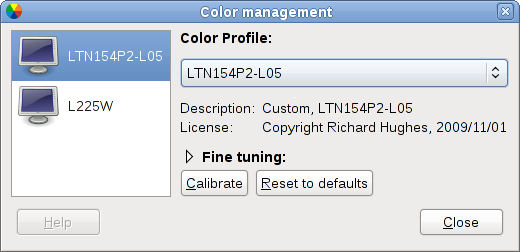

See GNOME Color Manager in action
GNOME Color Manager is a session framework for the GNOME desktop environment that makes it easy to manage easy to manage, install and generate color profiles.
These pages are meant to help you find information about GNOME Color Manager.
If you're taking photos, scanning in documents or printing images, then color accuracy is going to be very important. GNOME Color Manager allows you to install default profiles, or generate profiles using a hardware colorimeter device. It's also really easy to use.
GNOME Color Manager is released under the GNU General Public License (GPL).